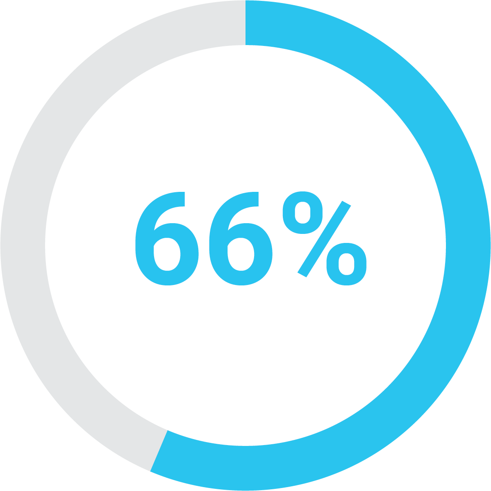
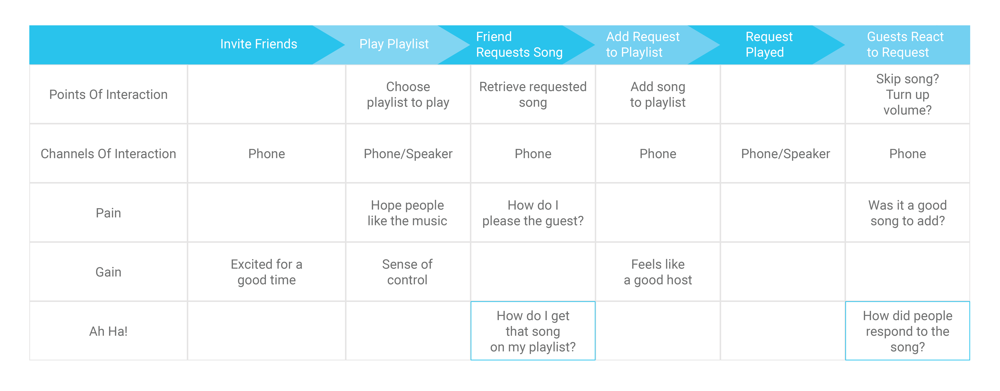

PROBLEM STATEMENT
Develop an efficient way to create live collaborative
playlists at social gatherings
COMPETITIVE ANALYSIS
Existing Collaborative Playlist Applications Either...
Require Spotify Premium
Spotify Premium is the leading music source that allows users to stream songs and create custom playlists. All outside source collaborative playlist applications require a Spotify Premium account.
Complex and Unclear
Existing methods of creating collaborative playlists require all users to share the same music source. They also require additional steps, such as texting the playlist from user to user.
USER RESEARCH
Survey Insights
8 Different Music Sources

66% Unpaid Music Sources
After surveying 25 people, I was able to analyze user's music source choices. My results included a wide variety of music sources, verifying that the chances of a group of people all sharing the same music source is not probable. The majority of the users listed unpaid music sources. Lastly, despite the common requirement of Spotify Premium, only 3/25 people used Spotify Premium.
Interview Insights
MUSIC SOURCE
It is important the music source can be easily accessed by everyone. Ideally, the source will not require a membership and be unpaid.
COLLABORATIVE
Listening to music can be a social experience. The app should help enhance social experiences and encourage participation.
CONTROL
With multiple users participating, it is important there are limits, for example, bad song requests, too many song requests etc.
INTUITIVE
The app should be simple & convenient. Idea is not to replace the user's music source, but be a tool for users when they want to create collaborative playlists.
TARGET MARKET
My research helped me to understand who I was designing
for and my persona became a social high school student.
Meet Luke
“I’m always with my friends, whether it be in the locker room or just hanging out at one of our houses on the weekends.”
Luke is a recent high school graduate and is attending MTSU in the fall. He’s used to having his friends over at his house all the time, so he looks forward to making new friends in college. Often times, Luke puts music on for background noise. And of course, since he is saving his money for college, he utilizes all the unpaid music sources.
JOURNEY MAP
Through journey mapping, I was able to identify my main pain point and a secondary pain point as well. I found it was important to not only focus on the act of collaboratively adding to a playlist, but also focus on actions that can be taken when people react to the song added (such as deleting songs or reordering songs).
